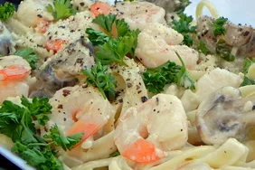

Shrimp Alfredo

Description
An Italian sauce that is usually combined with fettuccine noodles and is reffered to as
fettuccine alfredo. The sauce consists of heavy cream or half and half that is mixed with
butter, grated Parmesan cheese, pepper, and occasionally nutmeg to create a rich Italian meal.
Also includes different kinds of mean, such as, shrimp, chicken and scallops.
Ingredients
- 1 pound fettuccine pasta
- 1 tablespoon butter
- 1 pound cooked shrimp - peeled and deveined
- 4 cloves garlic, minced
- 1 cup half-and-half
- 6 tablespoons grated Parmesan cheese
- 1 tablespoon chopped fresh parsley
- Salt to taste
Steps
- Step 1: Fill a large pot with lightly salted water and bring it to a roiling
boil. Cook fettuccine at a boil until tender but firm to the bite, about 8 minutes. Drain.
- Step 2: Heat butter in a large skillet over medium heat. Cook and stir shrimp
and garlic in butter for 1 minute. Pour in half-and-half; stir. Add Parmesan cheese, 1 tablespoon
at a time, stirring constantly. Mix in parsley; season with salt. Simmer, stirring frequently, until
sauce has thickened.
- Step 3: Stir fettuccine into sauce until evenly coated; serve hot.